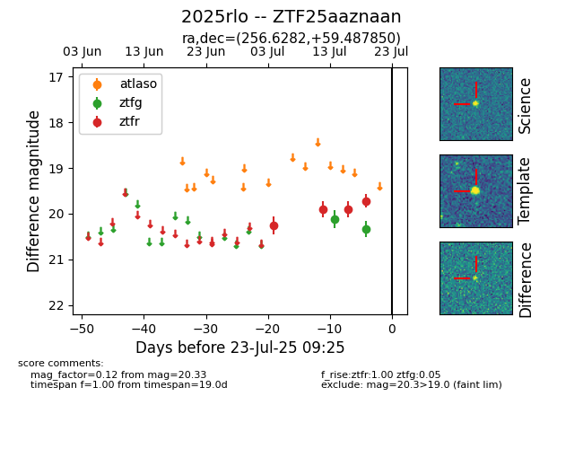

Target ZTF25aaznaan at 2025-07-23 11:48, see:
FINK: fink-portal.org/ZTF25aaznaan
Lasair: lasair-ztf.lsst.ac.uk/objects/ZTF25aaznaan
ALeRCE: alerce.online/object/ZTF25aaznaan
TNS: wis-tns.org/object/2025rlo
YSE: ziggy.ucolick.org/yse/transient_detail/2025rlo
alt names
ZTF25aaznaan (ztf,fink)
2025rlo (tns,yse)
coordinates:
equatorial (ra, dec) = (256.6282,+59.48785)
galactic (l, b) = (88.5026,+36.33907)
photometry
last ztfg=20.33, ztfr=19.72
2 ztfg, 4 ztfr detections
